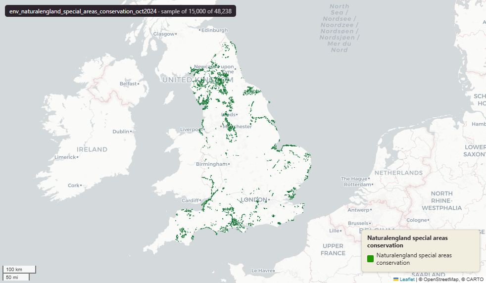

Natural England Special Areas of Conservation (SAC) for England, October 2024¶
Special Areas Conservation
env_naturalengland_special_areas_conservation_oct2024

SOURCE
- Natural England, via the NE Open Data Hub (ArcGIS Online platform). Special Areas of Conservation (England) dataset. Designation authority: Joint Nature Conservation Committee (JNCC).
DOCUMENTATION
- NE Open Data Hub : https://naturalengland-defra.opendata.arcgis.com/
- JNCC SAC overview : https://jncc.gov.uk/our-work/special-areas-of-conservation-overview/
DEFINITIONS
- "Special Areas of Conservation (SACs) are protected areas in the UK designated under" the Habitats Directive - the UK is "required to establish a network of important high-quality conservation sites that will make a significant contribution to conserving the habitats and species identified in Annexes I and II, respectively, of European Council Directive 92/43/EEC on the conservation of natural habitats and of wild fauna and flora, known as the Habitats Directive." (JNCC, Special Areas of Conservation overview)
SCOPE
- England. 48,238 rows representing 252 distinct SAC sites; geometry is exploded to one polygon part per row.
CRS
- EPSG:27700 (OSGB 1936 / British National Grid). Geometry type Polygon.
LICENCE
- Open Government Licence v3.0. © Natural England.
DATA QUALITY CAVEATS
- Marine and intertidal extent restored 3 July 2026: wholly-marine sites and offshore remainders are held as rows with NULL geography columns; the layer holds the complete source extent.
- Keep-everything (3 July 2026): geometry outside every MSOA — offshore, estuarine, or beyond the generalised coastline — is retained as rows with NULL geography columns (source_fid links the parts), so the layer holds the complete source geometry.
LOADED INTO uk_baseline
- Loaded by PNC, May 2026.
MSOA SPLIT (added 30 June 2026)
- Geometry split to one row per (source feature x MSOA 2021). Each row carries that MSOA's msoa21cd / msoa21nm / msoa21hclnm and best-fit lad22 / lad25. The source feature's original primary key is preserved as
source_fid;gidis a fresh surrogate primary key.
Columns¶
| Column | Type | Description / unit |
|---|---|---|
objectid |
bigint |
|
sac_name |
character varying |
|
sac_code |
character varying |
|
sac_area |
double precision |
|
grid_ref |
character varying |
|
easting |
double precision |
|
northing |
double precision |
|
latitude |
character varying |
|
longitude |
character varying |
|
name |
character varying |
|
status |
character varying |
|
id |
bigint |
|
file_ |
character varying |
|
area |
double precision |
|
easting0 |
double precision |
|
northing0 |
double precision |
|
gis_date |
character varying |
|
version |
bigint |
|
globalid |
character varying |
|
fid_original |
integer |
|
wd21nm |
character varying |
|
wd21cd |
character varying |
|
fid |
bigint |
|
area_ha |
double precision |
|
msoa21cd |
character varying |
Middle Layer Super Output Area (MSOA) 2021 code of this piece. Open Government Licence v3.0. |
msoa21nm |
character varying |
Official ONS MSOA 2021 name of this piece. Open Government Licence v3.0. |
msoa21hclnm |
text |
House of Commons Library readable MSOA name of this piece. Open Parliament Licence. |
lad22cd |
text |
Local Authority District 2022 code (2021 LAD geography, anchored to the MSOA 2021 name scoping), best-fit from this piece's msoa21cd. Open Government Licence v3.0. |
lad22nm |
text |
Local Authority District 2022 name (2021 LAD geography), best-fit from this piece's msoa21cd. Open Government Licence v3.0. |
lad25cd |
text |
Local Authority District 2025 code (current administering authority), best-fit from this piece's msoa21cd. Open Government Licence v3.0. |
lad25nm |
text |
Local Authority District 2025 name (current administering authority), best-fit from this piece's msoa21cd. Open Government Licence v3.0. |
geom |
geometry(MultiPolygon,27700) |
|
source_fid |
bigint |
Primary key of the source feature in the pre-split layer uk.env_naturalengland_special_areas_conservation_oct2024__preswap_jun30 (non-unique here: a feature spanning N MSOAs has N rows). |
gid |
bigint |